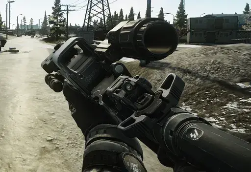
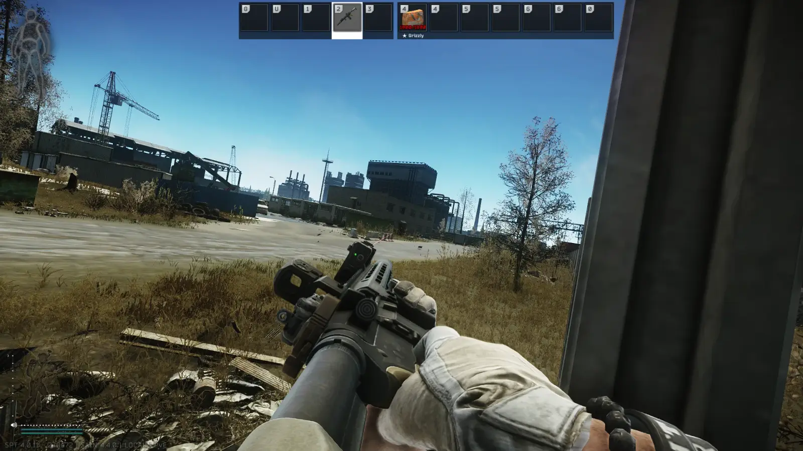
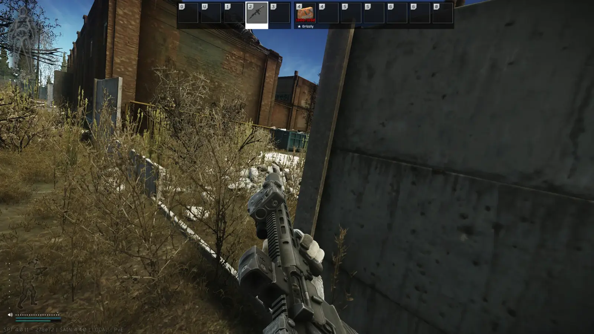
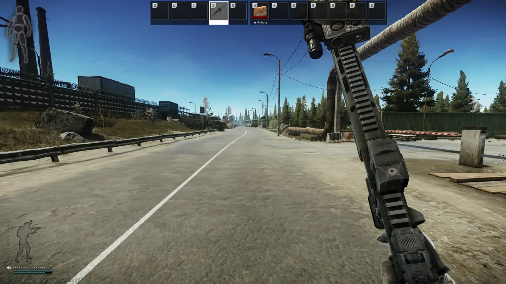
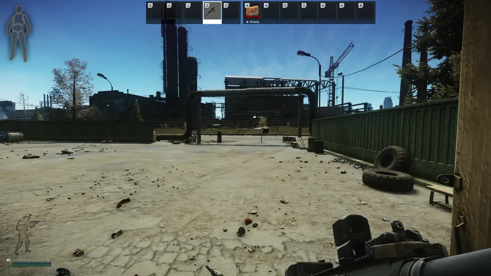
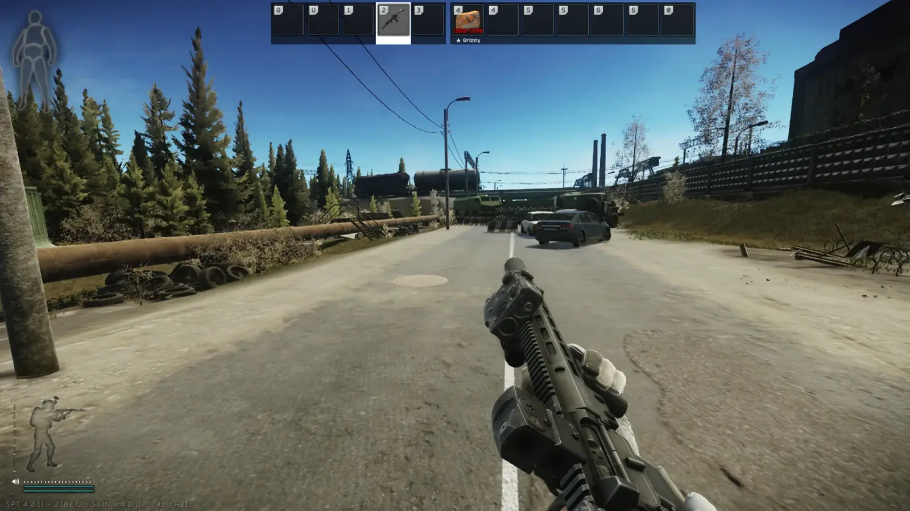

Mod
Camera Position Control & Custom Weapon Stances
- Downloads
- 9,992
- Favourites
- 32
- Mod lists
- 51
Camera Position Control
- Adjust your camera forward/backward, up/down, and sideways
3 Custom Weapon Stances
- Create up to 3 weapon ready positions
- Customize both rotation and position for each stance
- Cycle through stances with a hotkey (default: V)
- Smooth, adjustable transitions between stances
3.11 Version Included
Incompatible with other viewmodel / FOV mods
-
This mod uses copy pasted code from VCO - Viewmodel Camera Offset by Devraccoon
-
This mod was inspired by SPT-Combat-Stances for SPT 3.7 by Fontaine
-
Screens:





Version
1.1.5
SPT ~4.0
Fika: unknown
7,183 downloads14.4 KB
!!VERY IMPORTANT: IF YOU’RE UPDATING FROM 0.9.7 VERSION, PLEASE DELETE THE OLD DLL (CameraRotationMod.dll) FROM BEPINEX\PLUGINS FOLDER.!!
- Performance improvements (full changelog here: https://github.com/shengzhanzhe/stancesAndCameraPositionSPT4.0.11/releases/tag/v1.1.5)
VirusTotal: report 1
Version
1.1.3
SPT ~4.0
Fika: unknown
244 downloads14.3 KB
!!VERY IMPORTANT: IF YOU’RE UPDATING FROM 0.9.7 VERSION, PLEASE DELETE THE OLD DLL (CameraRotationMod.dll) FROM BEPINEX\PLUGINS FOLDER.!!
- Fixed the bug which caused ending tactical sprint makes weapon to warp towards normal (low) sprint position
VirusTotal: report 1
Version
0.9.0
SPT ~3.11
Fika: unknown
170 downloadsUnknown size
- 1.1.5 version backported to SPT 3.11
VirusTotal: report 1